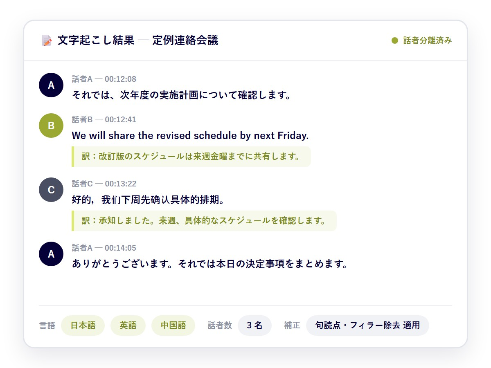

FEATURES


アップロードから議事録まで、AIが自動で行います
言語と話者数を選んでアップロードするだけ。複雑な事前設定は不要です。
01 · 聞き起こし工数の壁を解決
音声をアップロードするだけで、
音声をアップロードするだけで、
読めるテキストに
会議の録音ファイルをドラッグ&ドロップするだけで、タイムスタンプ・話者ラベル付きの文字起こしを自動生成。句読点の補正とフィラー（「えー」「あの」等）の除去は標準で適用され、そのまま読める文章として出力します。
- MP3・WAV・M4A・AAC・FLAC・OGG・WEBM の7形式に対応
- 1ファイル最大400MB、複数ファイルの一括処理も可能
- 言語と話者数を選ぶだけ、複雑な事前設定は不要
02 · 外部サービス不安の壁を解決
要約はローカルLLM。
要約はローカルLLM。
会議データを外部に出さない
議事録の要約は、外部クラウドではなく庁内・組織内環境で動作するLLMが実行します。個人情報や意思決定前の機微な情報を含む会議も、外部に送信せずにAIで処理できます。閉域環境でのAI活用については、オンプレミスAIのセキュリティ解説もご参照ください。
- 要約処理は庁内環境のLLMで完結、外部送信ゼロ
- 通信・保存データの暗号化と、担当者単位のアクセス権限管理
- 操作ログにより、誰がデータを扱ったか追跡可能
03 · 属人化・品質ばらつきの壁を解決
テンプレートで、「読める議事録」まで
テンプレートで、「読める議事録」まで
自動で仕上げる
文字起こし結果をもとに、標準テンプレート（会議概要・議題・決定事項・ToDo）に沿ってLLMが議事録ドラフトを自動生成。職員は「ゼロから書く」のではなく「確認して仕上げる」だけです。
- 決定事項・ToDo・担当・期限を自動整理
- 元発言をタイムスタンプで確認・検証可能
- 会議の種類に応じた標準テンプレートをご用意
※ お使いの議事録様式（PDF・Word）をそのままテンプレートとして利用できるカスタムテンプレート機能は、今後のアップデートで提供予定です。

04 · 多言語・複数話者の壁を解決
多言語が混ざる会議も、
多言語が混ざる会議も、
話者ごとに正確に記録
日本語・英語・中国語など複数の言語を選択でき、1つの音声に複数言語が混在していても認識できます。参加人数を事前に指定することで、話者分離（誰が話したか）の精度が向上します。
- 複数言語が混在する音声にも対応
- 話者数の事前指定で、話者分離の精度が向上
- 変換結果は言語・話者数・状況・更新日で一元管理